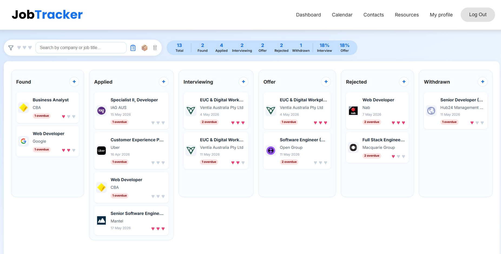

JobTracker
Full-Stack React & Django Job Application Management System
JobTracker is a collaborative full-stack job application management system developed as part of a team software project using React, JavaScript, Python, Django and REST APIs.
The application helps users manage job applications through a Kanban board, interview pipeline tracking, calendar scheduling, contact management, task management, notes and collaborative workflow features designed around real client requirements.
My main contribution was backend development, including building core application logic, supporting API functionality and working with the Django backend structure. On the frontend, I integrated components developed by team members, connected different parts of the interface, improved consistency across pages and helped align the overall design and user experience.

Key Features
- Kanban board for job application tracking
- Interview pipeline and calendar scheduling
- Contact, note and task management
- Django backend and REST API functionality
- GitHub team workflow with branches, pull requests and code reviews
Technologies: React, JavaScript, Python, Django, REST API, GitHub, Git, HTML, CSS, Netlify deployment and Agile development practices.
Explore Project